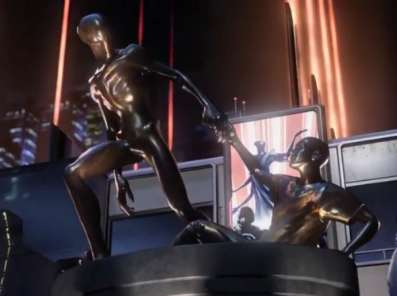
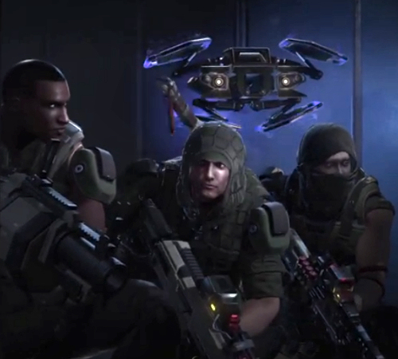

XCOM 2 is an upcoming turn-based tactics video game in development by Firaxis Games and published by 2K Games. XCOM 2 is a sequel of 2012’s XCOM: Enemy Unknown, which is itself a reboot of the legendary X-COM science fiction video game franchise, which began with the hit strategy video game UFO: Enemy Unknown published by MicroProse in 1994.
The setting of the game is New Providence in 2035, 20 years after unification. Twenty years have passed since world leaders offered an unconditional surrender to alien forces and XCOM, the planet’s last line of defence, was left decimated and scattered. Now the aliens rule Earth, building shining cities that promise a brilliant future for humanity on the surface, while concealing a sinister agenda underneath and eliminating all who dissent from their new order.
Only those who live at the edges of the world have a margin of freedom. Here, a force gathers once again to stand up for humanity. Always on the run, the remnant XCOM forces must find a way to regroup, expose the insidious truth behind the occupation and eliminate the alien threat once and for all.
As a player, you take control of the Avenger, a captured alien supply craft converted to XCOM’s mobile headquarters. On the Avenger, new rooms can be built as needed or existing ones re-configured, to give XCOM new abilities on the battlefield. Scientists and engineers can be used to research, develop and upgrade armour and weapons to improve your strategic capabilities. From the Avenger, you can guide your strike force around the world, as well as build popular support amongst the population and expose the aliens’ sinister plans.
XCOM 2 gives at your disposal five soldier classes, each with its own skill tree. New soldiers can be recruited and the new class abilities, like ‘Momentum’ let you create highly customised soldiers, so that you can form the best team for each specific mission. For example, the ‘Grenadier’ class has access to grenade launchers and explosives, while the ‘Ranger’ class is equipped with melee weapons like swords.
The multiplayer mode of the game allows one-on-one head-to-head squad battles
New gameplay system offers higher tactical flexibility in combat. The state of the world affects each combat mission’s environment. You can use concealment to ambush enemy patrols, loot enemies for precious gear, new artefacts and technologies, and rescue VIPs and casualties by carrying them to the extraction point, where the wounded soldiers can be revived, and the equipment of the fallen comrades can be retrieved for further use. In addition, players can hack into some of the enemies’ weaponry like turrets and reprogram them to attack alien units. The mission structure of the game is slightly different from the previous games in the XCOM series, and will include secondary objectives for the first time.
XCOM 2 features a diverse cast of enemies, from the ‘Advent’ – enforcers of the alien regime, to brand new, powerful alien species. The troops of the Advent include the evolved Sectoid soldiers and cunning Viper units. The Sectoid, that featured in XCOM: Enemy Unknown and XCOM: Enemy Within, has received a sizeable upgrade in XCOM 2 and gets its imposing height and elongated bipedal features thanks to genetic modification, when human DNA was inserted into the Sectoid genome. The deadly Viper, on the other hand, couldn’t be less human, with its serpent body that allows it to coil around, and crush, unsuspecting XCOM soldiers, and its tongue that is able to grasp and pull opponents.
Missions in XCOM 2 vary from desolate wildlands to alien-controlled megacities where your teams will strike at the very heart of alien infrastructure. Since the maps are procedurally-generated, there are nearly infinite combinations of maps, missions and mission objectives.
As in XCOM: Enemy Unknown, players can customise their soldiers’ name, nationality, gender and personality, while the uniform of the soldiers can also be modified.
The multiplayer mode of the game allows one-on-one head-to-head battles, where mix-and-matched squads of humans and aliens engage in ruthless combat.
The developers didn’t forget about the modders and the game comes with a comprehensive set of community-focused tools that allow you to modify gameplay and strategic game features, as well as create your own classes and aliens and set up unique campaigns. The results can be then shared

within the Steam Workshop. According to Jake Solomon, the Designer of XCOM: Enemy Unknown and creative director of XCOM 2, players’ feedback from the former game played an important role in the development of the latter.
XCOM 2 will be released in November 2015 in versions for Microsoft Windows, OS X, and Linux.
Below is several screenshots from the upcoming game:
{kind=link}
{kind=link}
{kind=link}
{kind=link}
{kind=link}
{kind=link}
{kind=link}